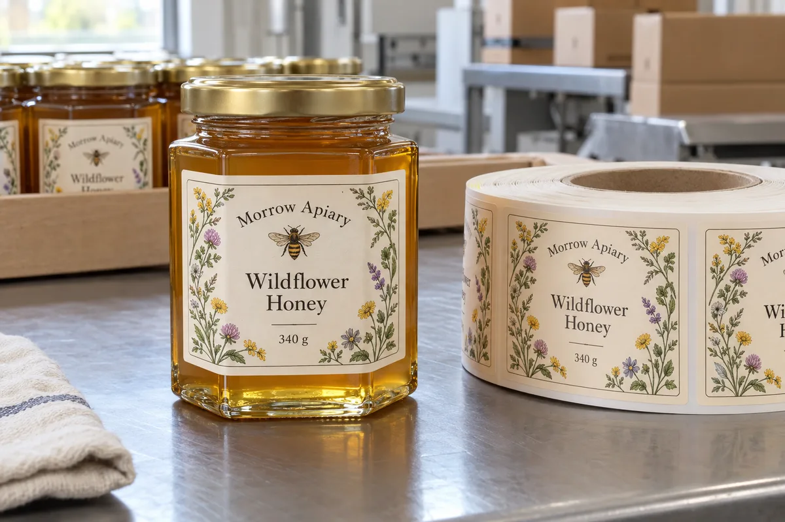

Start with the panel, not the catalogue size
A honey buyer can send a jar photo and a desired 80 mm label, but that is not enough to quote a reliable die line. The broadest point of a hexagonal jar is not necessarily a flat printable face. I would first measure the actual face between the two glass edges, then subtract a visible margin on both sides. The label should look deliberate rather than trying to turn a corner it cannot hold.
A composite example: a small apiary uses a straight-sided 340 g jar for one market and a faceted gift jar for another. Sharing the same front label across both jars sounds economical. If the gift jar has a narrower flat panel, however, the shared artwork may be legible on one and distorted on the other. In that case I would keep the brand design and change the die line, not force the same physical label.
Pick the construction for the way the jar is used
Glass is usually a more forgiving labeling surface than many polyolefin plastics, but a honey jar still passes through filling, wiping, cartoning and repeated handling. Ask when the jar is labeled: before filling, after filling, or after a wash-down step. A paper face can be an excellent premium choice for a dry shelf product; a film face may be easier to maintain when jars are repeatedly wiped with damp hands. Neither choice excuses applying the label over sticky residue.
The practical trade-off is not "paper versus waterproof" in the abstract. It is the exact filled jar, the actual cleaning routine and the shelf presentation the buyer wants. I would test one finished jar through those steps before buying a large run.
Keep product identity and regulatory copy separate
If the product will be sold in the United States, the final label needs market-specific review. The FDA's honey labeling guidance addresses the naming of honey and honey products; it does not turn a decorative mockup into an approved food label. Do not shrink required information simply because the jar face is small. A front label and an appropriately planned back or side panel may be more workable than one crowded wrap.
The fictional jar in the photograph illustrates label placement, not a retail-ready compliance example. Its artwork is not a substitute for the buyer's final ingredient, origin, quantity and market review.
What I would send to the label factory
Send a photograph with a ruler on the exact jar, the flat-panel width and height, lid overhang, planned label position, order quantity, whether labels go on before or after filling, and the intended storage and cleaning conditions. If you have two jar suppliers, send both. One glass mould can differ enough to matter.
I would request a paper proof or short physical trial on the filled jar before approving a full roll. The cheapest correction is the one made before a die is committed.
Our buying view
What we would decide first
Measure the usable glass panel, not the widest jar dimension. A real production sample can settle that question before a full printed roll is ordered.
Related buyer guides
Frequently asked questions
Can one honey label fit several jars?
Only if the usable flat panels and application conditions are sufficiently similar. Test the same die line on each actual jar.
Should I use paper or film on a honey jar?
Choose from the finished handling conditions. Paper can suit dry premium shelves; film may be easier to wipe, but both need a clean application surface.
Review your label specification
Send the real package, dimensions, order quantity, labeling stage, storage conditions and artwork. We can discuss a practical material and proof route.